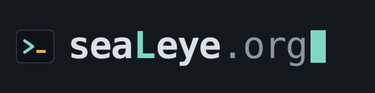

the self-service front door to your organization's own platform
Large organizations have built good platforms: libraries of infrastructure their security and audit teams have already approved. Developers still wait weeks for an environment, because someone from the platform team has to build each one by hand.
seaLeye is the front door to that platform. A developer runs one command in their app's folder, or opens the web portal. seaLeye reads the app, asks at most four questions in plain language, and writes a plan a person can read. On yes, it builds the environment from parts the platform team already trusts and hands back an address.
If the app needs something the platform can't build, seaLeye says so, shows the code that shows the need, saves the draft, and builds nothing. Each of those refusals tells the platform team what to build next.
The code, on GitHubWhere it stands
- The
sealeyecommand (seaLeye.run) reads an app, interviews the developer, plans, deploys, and manages the environment afterwards. - The web portal (seaLeye.online) does the same things from a browser: environments, settings, logs, performance, costs, evidence, tear down.
- One API behind both so the two surfaces can always do the same things.
- Four buildable modules on AWS today, with CloudFormation underneath. The roadmap says where it goes from here.
Pick it up
The code is open source under the GNU Affero General Public License v3.0. You need Node.js 20 or later. The tests need no AWS account and no API key:
$ git clone https://github.com/GregKliewer/sealeye$ cd sealeye && npm install && npm test
Running it for real takes an AWS account you're signed in to and an Anthropic API key. The README has the rest. Then read, roughly in this order:
- docs/README seaLeye in two minutes, and a map of everything else
- VISION who it's for and the principles that don't move
- ROADMAP the phases, and what's next
- ARCHITECTURE how it's built, with diagrams
- OPEN-QUESTIONS decisions nobody has made yet
- CONTRIBUTING how a change gets in
Try the pilot
A pilot of the hosted service is running for now. It needs a token; open an issue to ask for one.
$ curl -fsSL https://sealeye.run/install | sh
A note from me
I built seaLeye in 2026 inside OpMo Advisory, my consulting practice. It started as a demo and grew into something I think is genuinely useful, especially for banks and other big shops that already have a certified platform and can't get their developers onto it fast enough.
I'm closing the practice and turning my full attention to a new full-time role, so seaLeye won't be getting much of my time for a while. Rather than let it sit in a drawer, I'm putting it out here for anyone who wants to use it, fork it, learn from it, or contribute to it.
The code is yours under AGPL-3.0. The seaLeye name and domains stay with the original, so a fork needs a name of its own (NOTICE has the details). If you'd like to carry seaLeye itself forward as its maintainer, open an issue and tell me. I'm open to handing it over.
Greg Kliewer